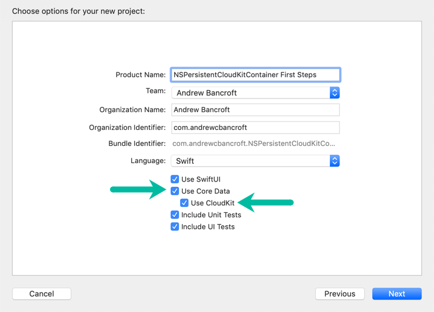
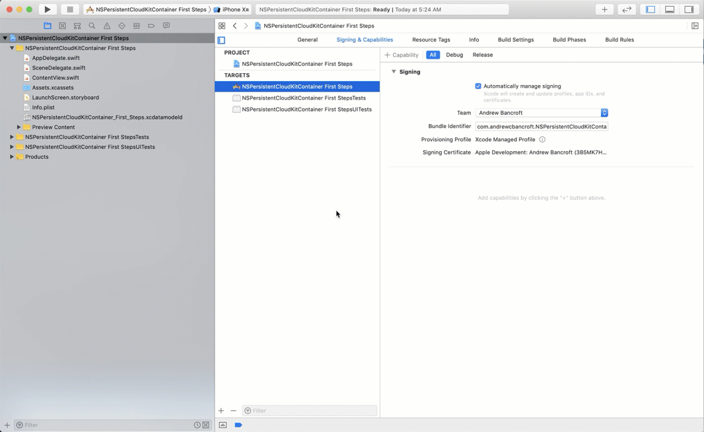
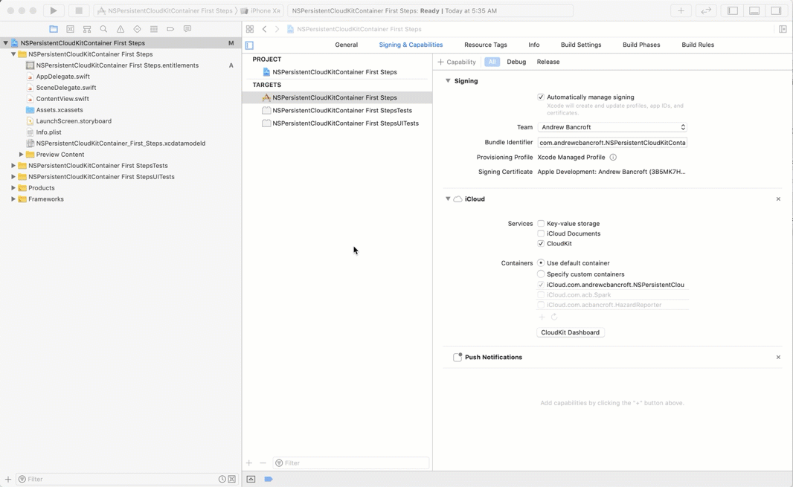

First Impressions of NSPersistentCloudKitContainer
How NSPersistentCloudKitContainer Helps
I suppose the first question everyone should ask is, “What’s the big deal? How does NSPersistentCloudKitContainer even help me?”
I noted at least three huge wins from the WWDC 2019 session. Ask yourself…
1) “Do I want to figure out how to retrieve data from CloudKit and merge it with my local Core Data persistent store on my own?” – No? Me either. 😃
NSPersistentCloudKitContainer handles making a local replica of your app’s CloudKit data.
2) “Do I want to implement synchronization schedluing and all the error handling that comes with CloudKit?” – I definitely don’t…
NSPersistentCloudKitContainer handles scheduling CloudKit operations, and takes your // handle errors placeholder code (👀) and actually implements it the right way internally. #sweet
3) “Do I want to map between NSManagedObjects and CKRecords by hand?” – Not if that could be automagic!
NSPersistentCloudKitContainer handles transforming your NSManagedObjects into CKRecords as well.
Exciting Times
Apple did a lot of work to encapsulate a very common set of code patterns that were necessary for implementing an app with Core Data and CloudKit.
They claim to be able to save us thousands of lines of code (and I believe it!).
I have an app that uses Core Data locally. I’ve been wanting to enable CloudKit on, so that data is synced across my users’ devices. Every time I think about what it’ll take to get the Core Data pieces talking the on the same wavelength as the CloudKit pieces, I just dread the inevitable headache that would ensue. So I run away. 😬
My hope is to see what it’s like to enable NSPersistentCloudKitContainer with that existing app. I’ll be sure to document the journey!
Dipping a Toe In
Just a couple of tidbits about the setup process for getting started with this new class…
Enabling Core Data + CloudKit
While it’s not absolutely required to check these checkboxes, Xcode will provide you with some of the boilerplate code necessary for working with Core Data and CloudKit together.

Starting Point
Xcode generates some code in your AppDelegate.swift file to initialize the Core Data Stack, only this time, instead of a standard NSPersistentContainer, it initializes the new NSPersistentCloudKitContainer:
1lazy var persistentContainer: NSPersistentCloudKitContainer = {
2 let container = NSPersistentCloudKitContainer(name: "NSPersistentCloudKitContainer_First_Steps")
3 container.loadPersistentStores(completionHandler: { (storeDescription, error) in
4 if let error = error as NSError? {
5 // Replace this implementation with code to handle the error appropriately.
6 fatalError("Unresolved error \(error), \(error.userInfo)")
7 }
8 })
9 return container
10 }()Not Ready Yet (more to enable)
Enable CloudKit Capability
Since you’re working with CloudKit in this scenario, you still need to enable CloudKit so that your app has the appropriate entitlements, and so that your app’s CloudKit container gets created in iCloud.

Enable Remote Notifications
CloudKit also uses Push Notifications to alert your app to data changes coming in from other devices. To get these notifications, you need to enable the Remote Notifications capability for your app as well.

Next Steps
When it comes to learning what to do next, Apple has provided a sample project that I hope to examine and take apart.
More to come!
comments powered by Disqus